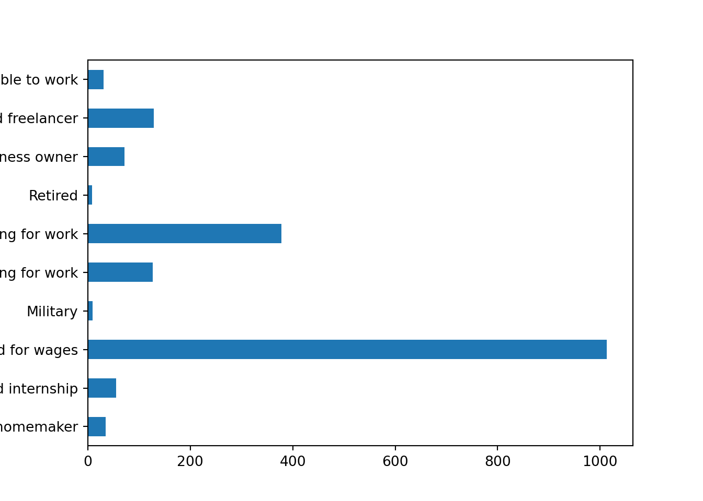

2 Flat Files
2.1 CSV
- flat files的代表就是csv，他的特色就是資料以plain text的方式做儲存(所以不會有color, bold,等格式)
- 資料是用delimiter做分隔，像csv就是用逗號做分隔(
sep = ",")，其他還可以用tab鍵做分隔(sep = "\t")、空白鍵做分隔(sep = " ")、分號做分隔(sep = ";")等
- 但無論如何，你在
pandas裡面，都是用pd.read_csv(data, sep = {delimiter})做讀取：
import pandas as pd
import matplotlib.pyplot as plt# Read the CSV and assign it to the variable data
tax_data = pd.read_csv("data/vt_tax_data_2016.csv")
# View the first few lines of data
print(tax_data.head())
#> STATEFIPS STATE zipcode agi_stub ... N11901 A11901 N11902 A11902
#> 0 50 VT 0 1 ... 10820 9734 88260 138337
#> 1 50 VT 0 2 ... 12820 20029 68760 151729
#> 2 50 VT 0 3 ... 10810 24499 34600 90583
#> 3 50 VT 0 4 ... 7320 21573 21300 67045
#> 4 50 VT 0 5 ... 12500 67761 23320 103034
#>
#> [5 rows x 147 columns]print(tax_data.shape)
#> (1476, 147)2.1.1 Modifying flat file imports
-
這邊要講的是一些細節，尤其是在原本的csv檔案太大(例如100多萬個row)時，要如何處理
- 選取特定的column就好(
usecols = {column_name or column_index list})
- 選取前n個rows就好(
nrows = {n})
- 跳過你指定的rows(
skiprows = [0, 2, 3]會跳過第0,2,3個row，skiprows = 50會跳過0~49個row)
- 選取特定的column就好(
2.1.1.1 選取特定column
-
原本的csv有147個column，太多了，很多我用不到，現在我只想load以下的column
- zipcode
- agi_stub (income group)
- mars1 (number of single households)
- MARS2 (number of households filing as married)
- NUMDEP (number of dependents)
# Create list of columns to use
cols = ["zipcode", "agi_stub", "mars1", "MARS2", "NUMDEP"]
# Create data frame from csv using only selected columns
tax_subcol = pd.read_csv("data/vt_tax_data_2016.csv", usecols = cols)
# View counts of dependents and tax returns by income level
print(tax_subcol.groupby("agi_stub").sum())
#> zipcode mars1 MARS2 NUMDEP
#> agi_stub
#> 1 1439444 170320 28480 52490
#> 2 1439444 104000 37690 64660
#> 3 1439444 39160 45390 47330
#> 4 1439444 11670 44410 37760
#> 5 1439444 7820 67750 60730
#> 6 1439444 1210 16340 163002.1.1.2 選取前n個rows, 跳過某些row
- 現在，我們先讀取前500個rows，並存成
vt_data_first500
vt_data_first500 = pd.read_csv("data/vt_tax_data_2016.csv", nrows = 500)
print(vt_data_first500.shape)
#> (500, 147)現在我想load之後的500個rows，命名成
vt_data_next500-
要做到這樣，需要以下幾個步驟：
- 用
skiprows = 500來跳過前500個rows
- 用
nrows = 500來說明我要取接下來這500個rows
- 用
header = None來說明從row = 501開始讀的row，他不是header，他就是row，你要直接讀取他
- 用
names = list(vt_data_first500)，來幫資料的欄位命名。這邊要注意到，list(vt_data_first500)就可以抓出vt_data_first500的colnames了
- 用
vt_data_next500 = pd.read_csv("data/vt_tax_data_2016.csv",
nrows=500,
skiprows=500,
header=None,
names=list(vt_data_first500))# View the Vermont data frames to confirm they're different
print(vt_data_first500.head())
#> STATEFIPS STATE zipcode agi_stub ... N11901 A11901 N11902 A11902
#> 0 50 VT 0 1 ... 10820 9734 88260 138337
#> 1 50 VT 0 2 ... 12820 20029 68760 151729
#> 2 50 VT 0 3 ... 10810 24499 34600 90583
#> 3 50 VT 0 4 ... 7320 21573 21300 67045
#> 4 50 VT 0 5 ... 12500 67761 23320 103034
#>
#> [5 rows x 147 columns]
print(vt_data_next500.head())
#> STATEFIPS STATE zipcode agi_stub ... N11901 A11901 N11902 A11902
#> 0 50 VT 5356 2 ... 50 76 130 212
#> 1 50 VT 5356 3 ... 40 142 50 148
#> 2 50 VT 5356 4 ... 0 0 30 87
#> 3 50 VT 5356 5 ... 30 531 30 246
#> 4 50 VT 5356 6 ... 0 0 0 0
#>
#> [5 rows x 147 columns]2.1.2 Handling errors and missing data
-
讀取Flat File，常碰到以下問題：
- Column的data type錯誤 -> 可以用
dtype = {column_name: type}來修正錯誤
- 遺漏值的預設值和你想的不同(e.g. 某個欄位的數值=999代表missing value) -> 使用
na_valuesargument來做
- 直接丟error給你，無法parse成dataframe -> 看error message來解決問題
- Column的data type錯誤 -> 可以用
2.1.2.1 Specify data types
- 舉例來說，看一下剛剛的
vt_data_first500的各欄位data type
print(vt_data_first500.dtypes)
#> STATEFIPS int64
#> STATE object
#> zipcode int64
#> agi_stub int64
#> N1 int64
#> ...
#> A85300 int64
#> N11901 int64
#> A11901 int64
#> N11902 int64
#> A11902 int64
#> Length: 147, dtype: object- 可以看到，zipcode被判斷為
int64，但其實他是字串。而agi_stub是社經地位，為categorical variable，所以應該是”category”
- 那我們就特別assign這兩個欄位的data type:
# Create dict specifying data types for agi_stub and zipcode
data_types = {"agi_stub": "category",
"zipcode": "str"}
# Load csv using dtype to set correct data types
data = pd.read_csv("data/vt_tax_data_2016.csv", dtype = data_types)
# Print data types of resulting frame
print(data.dtypes.head())
#> STATEFIPS int64
#> STATE object
#> zipcode object
#> agi_stub category
#> N1 int64
#> dtype: object- nice，搞定。其實，更常見的workflow，是先把資料load下來，探索後，才轉換欄位的資料格式，而不是像現在這樣讀取的時後就轉。不過沒關係，這已經牽扯到資料清理的範圍，我們等資料清理那邊再來處理就好
2.1.2.2 Set custom NA values
- 這邊我們想做一個設定，把zipcode這個欄位中，數值=0的，都設為NA。作法如下：
# Create dict specifying that 0s in zipcode are NA values
null_values = {"zipcode": 0}
# Load csv using na_values keyword argument
data = pd.read_csv("data/vt_tax_data_2016.csv",
na_values = null_values)
# View rows with NA ZIP codes
print(data[data.zipcode.isna()])
#> STATEFIPS STATE zipcode agi_stub ... N11901 A11901 N11902 A11902
#> 0 50 VT NaN 1 ... 10820 9734 88260 138337
#> 1 50 VT NaN 2 ... 12820 20029 68760 151729
#> 2 50 VT NaN 3 ... 10810 24499 34600 90583
#> 3 50 VT NaN 4 ... 7320 21573 21300 67045
#> 4 50 VT NaN 5 ... 12500 67761 23320 103034
#> 5 50 VT NaN 6 ... 3900 93123 2870 39425
#>
#> [6 rows x 147 columns]2.1.2.3 Skip bad data
- 這邊舉了一個你
pd.read_csv()會失敗的例子，就是原始資料中，有一個row，他的欄位數目比別人多
- 那這樣在讀取的時候，就會無法parse成大家都一樣的欄位數，所以會error
- 遇到這種問題，我們會稱剛剛那個row叫”bad line”，我們可以下參數，讓pandas跳過這個line，然後warning我們就好
- 看code就懂了：
try:
# Set warn_bad_lines to issue warnings about bad records
data = pd.read_csv("data/vt_tax_data_2016_corrupt.csv",
error_bad_lines = False,
warn_bad_lines = True)
# View first 5 records
print(data.head())
except pd.io.common.CParserError:
print("Your data contained rows that could not be parsed.")2.2 Excel
2.2.1 Single worksheet
只要用
pd.read_excel()就可以讀excel了，超easy的-
一些重要的argument，介紹一下：
-
nrows = 100，只取前100個row
-
skiprows = 100，跳過前100個row
-
skiprows = [1,2,3]，跳過這三個row
-
usecols = ["a","b","c"]只讀colname= a, b, c的column
-
usecols = [0,1,2]只讀這三個column
-
usecols = "A:C, E"，這就是excel專屬的了，就是你看到的欄位A,B,C,E要讀進來
-
先來讀資料吧：
# Read spreadsheet and assign it to survey_responses
survey_responses = pd.read_excel("data/fcc-new-coder-survey.xlsx")
# View the head of the data frame
print(survey_responses.head())
#> FreeCodeCamp New Developer Survey Responses, 2016 ... Unnamed: 97
#> 0 Source: https://www.kaggle.com/freecodecamp/20... ... NaN
#> 1 Age ... StudentDebtOwe
#> 2 28 ... 20000
#> 3 22 ... NaN
#> 4 19 ... NaN
#>
#> [5 rows x 98 columns]- 會發現，第一列根本就不是變數名稱，回去看一下excel原始檔，會發現，真正的變數是從第三列開始
- 所以，我們用
skiprows = 2來跳過前兩列
# Read spreadsheet and assign it to survey_responses
survey_responses = pd.read_excel("data/fcc-new-coder-survey.xlsx",skiprows = 2)
# View the head of the data frame
print(survey_responses.head())
#> Age AttendedBootcamp ... SchoolMajor StudentDebtOwe
#> 0 28.0 0.0 ... NaN 20000
#> 1 22.0 0.0 ... NaN NaN
#> 2 19.0 0.0 ... NaN NaN
#> 3 26.0 0.0 ... Cinematography And Film 7000
#> 4 20.0 0.0 ... NaN NaN
#>
#> [5 rows x 98 columns]- 接下來，試試讀部分資料： 跳過前兩個row，只選欄位AD, AW~BA的column:
# Create string of lettered columns to load
col_string = "AD, AW:BA"
# Load data with skiprows and usecols set
survey_responses = pd.read_excel("data/fcc-new-coder-survey.xlsx",
skiprows = 2,
usecols = col_string)
# View the names of the columns selected
print(survey_responses.columns)
#> Index(['ExpectedEarning', 'JobApplyWhen', 'JobPref', 'JobRelocateYesNo',
#> 'JobRoleInterest', 'JobWherePref'],
#> dtype='object')2.2.2 Multiple worksheet
-
如果excel檔裡面有很多個sheet，那可以只選一個來讀，或讀多個。語法都是透過
sheet_name這個argument-
sheet_name = "HAHA"讀HAHA這個名稱的sheet
-
sheet_name = 0讀index = 0這個sheet，也就是第一個sheet (注意這邊還是zero-indexed系統)
-
sheet_name = ["HAHA", "HIHI"]用list來說明要讀哪些sheet
-
sheet_name = [0, 1]用list來說明要讀哪些sheet
-
sheet_name = None，就可以讀進”全部”的sheets
-
如果今天讀進多個sheet，那python要用哪種data structure來存？ -> dictionary。key是sheet name，value是dataframe
# Load both the 2016 and 2017 sheets by name
all_survey_data = pd.read_excel("data/fcc-new-coder-survey.xlsx",
skiprows = 2,
sheet_name = ['2016','2017'])
# View the data type of all_survey_data
print(type(all_survey_data))
#> <class 'dict'>print(all_survey_data["2017"])
#> Age AttendedBootcamp ... SchoolMajor StudentDebtOwe
#> 0 27.0 0.0 ... NaN NaN
#> 1 34.0 0.0 ... NaN NaN
#> 2 21.0 0.0 ... NaN NaN
#> 3 26.0 0.0 ... NaN NaN
#> 4 20.0 0.0 ... Information Technology NaN
#> .. ... ... ... ... ...
#> 995 30.0 0.0 ... Chemistry NaN
#> 996 31.0 0.0 ... Computer Programming 1500.0
#> 997 16.0 0.0 ... NaN NaN
#> 998 28.0 0.0 ... Finance 20000.0
#> 999 22.0 0.0 ... Computer Aided Design (CAD) NaN
#>
#> [1000 rows x 98 columns]- 現在這兩個sheet，其實欄位都一樣，只是所屬年份不同。那我如果想把這兩個sheet合併起來，然後多加一個column，註明他是從哪個sheet來的，我可以這樣做：
# Create an empty data frame
combined_responses = pd.DataFrame()
# Set up for loop to iterate through values in responses
for df in all_survey_data.values():
# Print the number of rows being added
print("Adding {} rows".format(df.shape[0]))
# Append df to all_responses, assign result
combined_responses = combined_responses.append(df)
#> Adding 1000 rows
#> Adding 1000 rows
print(combined_responses)
#> Age AttendedBootcamp ... SchoolMajor StudentDebtOwe
#> 0 28.0 0.0 ... NaN 20000
#> 1 22.0 0.0 ... NaN NaN
#> 2 19.0 0.0 ... NaN NaN
#> 3 26.0 0.0 ... Cinematography And Film 7000
#> 4 20.0 0.0 ... NaN NaN
#> .. ... ... ... ... ...
#> 995 30.0 0.0 ... Chemistry NaN
#> 996 31.0 0.0 ... Computer Programming 1500.0
#> 997 16.0 0.0 ... NaN NaN
#> 998 28.0 0.0 ... Finance 20000.0
#> 999 22.0 0.0 ... Computer Aided Design (CAD) NaN
#>
#> [2000 rows x 98 columns]- 簡單畫個圖:
# Graph employment statuses in sample
counts = combined_responses.groupby("EmploymentStatus").EmploymentStatus.count()
counts.plot.barh()
plt.show()
2.2.3 Modify imports: True/False data
- 在pandas中，如果你有些欄位，不是True/False的coding，但他實際上是boolean，那我該如何修改他呢？
- 舉例來說，這筆假資料：
boolean_df = pd.read_excel("data/boolean_excel.xlsx")
print(boolean_df)
#> aa bb cc
#> 0 True Yes 1
#> 1 False No 1
#> 2 True No 0boolean_df.dtypes
#> aa bool
#> bb object
#> cc int64
#> dtype: object- 可以看到aa是boolean，而bb和cc都不是
- 那如果我希望bb也是boolean，然後”Yes” = True, “No” = False，我可以這樣做：
boolean_df = pd.read_excel("data/boolean_excel.xlsx",
dtype = {"bb": "bool"},
true_values = ["Yes"],
false_values = ["No"])
print(boolean_df)
#> aa bb cc
#> 0 True True 1
#> 1 False False 1
#> 2 True False 0
print(boolean_df.dtypes)
#> aa bool
#> bb bool
#> cc int64
#> dtype: object- nice，修改成功。那如果我想把cc也改成boolean，然後1 = True, 0 = False，我就依樣畫葫蘆：
boolean_df = pd.read_excel("data/boolean_excel.xlsx",
dtype = {"bb": "bool", "cc": "bool"},
true_values = ["Yes", 1],
false_values = ["No", 0])
print(boolean_df)
#> aa bb cc
#> 0 True True True
#> 1 False False True
#> 2 True False False
print(boolean_df.dtypes)
#> aa bool
#> bb bool
#> cc bool
#> dtype: object- 搞定!!
2.2.4 Modify imports: parsing dates
- 接下來要處理時間的資料了，看一下假資料：
fake_time_dic = {
"Part1StartTime": ["2020-10-07 21:00:00", "2020-10-08 21:00:00"],
"Part1EndTime": ["2020-10-07 22:00:00", "2020-10-08 22:00:00"],
"Part2StartDate": ["2020-11-07", "2020-11-08"],
"Part2StartTime": ["21:00:00", "22:12:15"],
"Part2EndTime": ["07112020 22:00:00", "08112020 23:00:00"]
}
fake_time_df = pd.DataFrame(fake_time_dic)
# fake_time_df.to_excel("/home/tom-hanks/import_data/fake_time_df.xlsx")
py$fake_time_df
#> Part1StartTime Part1EndTime Part2StartDate
#> 1 2020-10-07 21:00:00 2020-10-07 22:00:00 2020-11-07
#> 2 2020-10-08 21:00:00 2020-10-08 22:00:00 2020-11-08
#> Part2StartTime Part2EndTime
#> 1 21:00:00 07112020 22:00:00
#> 2 22:12:15 08112020 23:00:00可以看到
Part1StartTime是標準的yyyy-mm-dd hh:mm:ss，但Part2StartDate只有yyyy-mm-dd，而Part2EndTime更是倒過來的ddmmyyyy hh:mm:ss那我們要如何parse呢？ 分兩種做法，一種是讀進來的時候直接parse，另一種是像現在這樣，先讀取，再轉換
我們現在先示範先讀取再轉換的做法。方法很簡單，用
pd.to_datetime(column, format = "")來處理-
其中，format的部分，對照表如下：
Code Meaning Example %Y Year(4-digit) 2020 %m Month (zero-padded) 10 %d Day (zero-padded) 08 %H Hour (24-hour clock) 13 %M Minute (zero-padded) 37 %S Second(zero-padded) 12
fake_time_df['Part1StartTime'] = pd.to_datetime(fake_time_df['Part1StartTime'], format = "%Y-%m-%d %H:%M:%S")
fake_time_df['Part2EndTime'] = pd.to_datetime(fake_time_df['Part2EndTime'], format = "%m%d%Y %H:%M:%S")
fake_time_df.dtypes
#> Part1StartTime datetime64[ns]
#> Part1EndTime object
#> Part2StartDate object
#> Part2StartTime object
#> Part2EndTime datetime64[ns]
#> dtype: object- 接下來第二種作法，是讀取時，直接指定：
fake_time_df = pd.read_excel("data/fake_time_df.xlsx",
parse_dates = ["Part1StartTime"])
# Print first few values of Part1StartTime
print(fake_time_df.Part1StartTime.head())
#> 0 2020-10-07 21:00:00
#> 1 2020-10-08 21:00:00
#> Name: Part1StartTime, dtype: datetime64[ns]# Create dict of columns to combine into new datetime column
datetime_cols = {"Part2Start": ["Part2StartDate",
"Part2StartTime"]}
# Load file, supplying the dict to parse_dates
fake_time_df = pd.read_excel("data/fake_time_df.xlsx",
parse_dates=datetime_cols)
# View summary statistics about Part2Start
print(fake_time_df.Part2Start.describe())
#> count 2
#> unique 2
#> top 2020-11-07 21:00:00
#> freq 1
#> first 2020-11-07 21:00:00
#> last 2020-11-08 22:12:15
#> Name: Part2Start, dtype: object
#>
#> <string>:1: FutureWarning: Treating datetime data as categorical rather than numeric in `.describe` is deprecated and will be removed in a future version of pandas. Specify `datetime_is_numeric=True` to silence this warning and adopt the future behavior now.